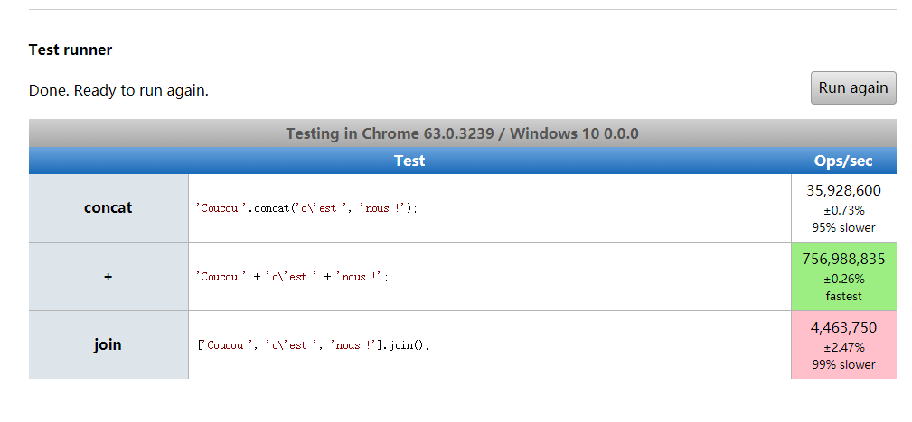

1. 定义
1.1 基本字符串
字符串字面量 (通过单引号或双引号定义) 和 直接调用 String方法(没有通过 new 生成字符串对象实例)的字符串都是基本字符串。基本字符串是没有相关扩展方法，只有将基本字符串可转化为字符串对象之后才可以使用字符串对象的方法，当基本字符串需要调用一个字符串对象才有的方法或者查询值的时候，JavaScript会自动将基本字符串转换为字符串对象，并且调用相应的方法或者执行查询。
1.2 字符串对象
一个用于字符串或一个字符序列的构造函数。字符串对于可以保存以文本形式表示的数据非常有用。 一些常用的字符串操作有：查询字符串长度，使用 + 和 += 运算符来构建和连接字符串，使用 indexOf 方法检查某一子字符串在父字符串中的位置，又或是使用substring方法提取从父字符串中提取子字符串。
1.3 模板字符串
模板字面量/Template literals 是允许嵌入表达式的字符串字面量。你可以使用多行字符串和字符串插值功能。它们在ES2015规范的先前版本中被称为模板字符串/template strings。
模板字符串使用反引号 (` `) 来代替普通字符串中的用双引号和单引号。模板字符串可以包含特定语法(${expression})的占位符。占位符中的表达式和周围的文本会一起传递给一个默认函数，该函数负责将所有的部分连接起来，如果一个模板字符串由表达式开头，则该字符串被称为带标签的模板字符串，该表达式通常是一个函数，它会在模板字符串处理后被调用，在输出最终结果前，你都可以通过该函数来对模板字符串进行操作处理。在模版字符串内使用反引号（`）时，需要在它前面加转义符（\）。
1 | `\`` === "`" // --> true |
2. 名词字典
本文中出现变量名词的解释
1 | var a = 4; |
| 变量名 | 含义 | 举例 |
|---|---|---|
| objectName | 相关对象类型名称 | 就像上面js代码中String |
| varName | 相关对象类型实例化后的变量名 | 就像上面js代码中strString,oString,tString_1 |
| varName_val | 相关对象类型实例化后的实际内容 | 就像上面js代码中hello watermelon |
| functionName | 函数名称 | 就像上文的tag |
| BMP | 基本多文种平面（Basic Multilingual Plane），或称第0平面或0号平面（Plane 0），是Unicode中的一个编码区段。编码从U+0000至U+FFFF。现版本为修订10.0.0版，2017年6月20日出版。 |
无举例 |
| ES5 | ECMAScript第五版，发布为ECMAScript 2015，最初发布第一版时间为2009年12月发布，后来在发布时间2015年6月进行了大量修改 | 无举例 |
| ES6 | ECMAScript第六版（发布为ECMAScript 2016），发布时间2016年 | 无举例 |
| ES7 | ECMAScript第七版（发布为ECMAScript 2017），发布时间2017年 | 无举例 |
| letter | 字母 | letter(8) 代表八个子母，一个字母长度为一 |
| char | 汉字 | char(8) 代表八个汉字，一个汉字长度为一 |
| num | 数字 | num(8) 代表八个数字，一个数字长度为一 |
| sign | 符号 | sign(8) 代表八个符号，一个符号长度为一 |
| \s | 空格符 | \s(8) 代表八个空格符，一个空格符长度为一 |
| \t | 缩进符 | \t(8) 代表八个缩进符，一个缩进符长度为四 |
| \n | 换行符 | \n(8) 代表八个换行符，一个换行符长度为一 |
| \u | 换行符 | \u(8) 代表八个非BMP字符，一个非BMP字符长度为二 |
| param1,param2,param3,…,paramN | 函数中需要传入第一个到第N个的参数值 | 就像上面js代码中hello world |
| 柔和方法 | 不会改变字符串原始值 | 就是执行某个方法之后，varName原本所包含的内容不会变化 |
| 强硬方法 | 会改变字符串原始值 | 就是执行某个方法之后，varName原本所包含的内容会变化 |
| 父字符串 | 原始的对象内容 | 就像上面js代码中strString,oString,tString_1 |
| 子字符串 | 传入需要检索或者替换的参数值 | 就像上面js代码中hello watermelon |
| 接受负值参 | 函数接受负值的参数，并且可以正常处理返回对应的值 | 如果方法的描述中出现这五个字，则代表这个方法接受负值参数，如果没有出现，则代表不接受，请注意 |
| 不推荐使用 | 该特性是非标准的，请尽量不要在生产环境中使用它。 | 如果下面属性和方法的描述中出现这五个字，意思最好不要使用这个属性或者这个方法。 |
| 已废弃 | 目前现行的几大主流浏览器都不支持了 | 如果下面属性和方法的描述中出现这三个字，意思你使用了这个一般会报错，或者直接返回undefined。 |
| 测试中 | 此功能某些浏览器尚在开发中，请参考浏览器兼容性表格以得到在不同浏览器中适合使用的前缀。由于该功能对应的标准文档可能被重新修订，所以在未来版本的浏览器中该功能的语法和行为可能随之改变。 | 如果下面属性和方法的描述中出现这三个字，意思你使用了这个不一定被所有浏览器都兼容，最好不要使用这个属性或者这个方法。 |
3. 字符串的属性
3.1 继承对象的属性
| 属性名 | 描述 | 使用方法 |
|---|---|---|
| constructor | 对创建对象的函数的引用（指针）。 | varName.constructor |
__proto__ |
对象具有属性__proto__，可称为隐式原型，一个对象的隐式原型指向构造该对象的构造函数的原型。 |
varName.__proto__ |
| length | 字符串的长度。 | varName.length |
__count__ |
已废弃，用来存放对象的可枚举的属性的个数 |
varName.__count__ |
__noSuchMethod__ |
已废弃，属性曾经是指当调用某个对象里不存在的方法时即将被执行的函数，在__noSuchMethod__属性被移除之后，ECMAScript 2015 (ES6) 规范转而采用 Proxy 对象。 |
varName.__noSuchMethod__ = fun(id, args){} @param1 id 调用的不存在的方法名 @param2 args 传递给该方法的参数数组 |
__parent__ |
已废弃，指向一个对象的上下文，对于最顶层对象来说,这个属性的值就是全局对象window。 |
varName.__parent__ |
3.2 继承funciton的属性
| 属性名 | 描述 | 使用方法 |
|---|---|---|
| arguments | 不推荐使用，属性代表传入函数的实参，它是一个类数组对象。已经被废弃很多年了，现在推荐的做法是使用函数内部可用的 arguments 对象来访问函数的实参。在函数递归调用的时候（在某一刻同一个函数运行了多次，也就是有多套实参），那么 arguments 属性的值是最近一次该函数调用时传入的实参。如果函数不在执行期间，那么该函数的 arguments 属性的值是 null。 |
objectName.arguments or functionName.arguments |
| arity | 已废弃，返回一个函数的形参数量，是一个古老的已经没有浏览器支持的属性,你应该使用length属性来代替.。 |
objectName.arity or functionName.arity |
| caller | 不推荐使用，如果一个函数functionName是在全局作用域内被调用的,则functionName.caller为null,相反,如果一个函数是在另外一个函数作用域内被调用的,则functionName.caller指向调用它的那个函数，该属性的常用形式arguments.callee.caller替代了被废弃的arguments.caller。 |
objectName.caller or functionName.caller |
| displayName | 不推荐使用，获取函数的显示名称。 |
objectName.displayName or functionName.displayName |
| length | 指明函数的形参个数，length 是函数对象的一个属性值，指该函数有多少个必须要传入的参数，即形参的个数。形参的数量不包括剩余参数个数，仅包括第一个具有默认值之前的参数个数。与之对比的是，arguments.length 是函数被调用时实际传参的个数。 | objectName.length or functionName.length |
| name | 返回一个函数声明的名称，使用new Function(...)语法创建的函数或只是 Function(...) create Function对象及其名称为anonymous。 |
objectName.name or functionName.name |
| prototype | 函数对象具有属性__proto__，可称为隐式原型，一个对象的隐式原型指向构造该对象的构造函数的原型。 |
objectName.prototype or functionName.prototype |
3.3 字符串的常用属性值
3.3.1 constructor
| 变量名 | 调取方式 | 属性值 |
|---|---|---|
| strString | strString.constructor | [Function: String] |
| oString | oString.constructor | [Function: String] |
oString_1 |
oString_1.constructor | [Function: String] |
tString_1 |
tString_1.constructor | [Function: String] |
tString_2 |
tString_2.constructor | [Function: String] |
tString_3 |
tString_3.constructor | [Function: String] |
tString_4 |
tString_4.constructor | [Function: String] |
3.3.2 proto
| 变量名 | 调取方式 | 属性值 |
|---|---|---|
| strString | strString.__proto__ |
[String: ‘’] |
| oString | oString.__proto__ |
[String: ‘’] |
oString_1 |
oString_1.__proto__ |
[String: ‘’] |
tString_1 |
tString_1.__proto__ |
[String: ‘’] |
tString_2 |
tString_2.__proto__ |
[String: ‘’] |
tString_3 |
tString_3.__proto__ |
[String: ‘’] |
tString_4 |
tString_4.__proto__ |
[String: ‘’] |
3.3.3 length
| 变量名 | 调取方式 | 属性值 | 解释 |
|---|---|---|---|
| strString | strString.length | 16 | letter(15)+\s(1) |
| oString | oString.length | 11 | letter(10)+\s(1) |
oString_1 |
oString_1.length | 6 | letter(2)+\s(2)+\u(1) |
tString_1 |
tString_1.length | 14 | letter(13)+\s(1) |
tString_2 |
tString_2.length | 41 | letter(18)+num(2)+\s(4)+\t(4)+\n(1) |
tString_3 |
tString_3.length | 25 | letter(15)+num(4)+\s(4)+sign(1)+\n(1) |
tString_4 |
tString_4.length | 10 | char(9)+sign(1) |
3.4 注意事项
| 特性名称 | 是否可修改 |
|---|---|
| writable | false |
| enumerable | false |
| configurable | false |
提示
所有 String 的实例都继承自 String.prototype. 任何String.prototype上的改变都会影响到所有的 String 实例。
但是请注意由于每个
varName的构造方法不同，所以在instanceof时候的结果不同，instanceof运算符用来测试一个对象在其原型链中是否存在一个构造函数的prototype属性。
1 | //使用方法 |
| 变量名 | 调取方式 | 属性值 |
|---|---|---|
| strString | strString instanceof(String) | false |
| oString | oString instanceof(String) | true |
tString_1 |
tString_1 instanceof(String) | false |
tString_2 |
tString_2 instanceof(String) | false |
tString_3 |
tString_3 instanceof(String) | false |
tString_4 |
tString_4 instanceof(String) | false |
4. 字符串对象的柔和方法
4.1. HTML相关方法
4.1.1 概述
| 方法名 | 描述 | 参数 |
|---|---|---|
| big() | 不推荐使用，把字符串显示为大号字体，只在页面中才会有大两个字体号效果。 |
无 |
| small() | 不推荐使用， 把字符串显示为小号字体，只在页面中才会有小两个字体号效果。 |
无 |
| blink() | 不推荐使用， 把字符串显示闪动的字符串，目前没有看到有浏览器支持 |
无 |
| bold() | 不推荐使用， 把字符串显示粗体的字符串，只在页面中才会有粗体效果，IE不兼容。 |
无 |
| italics() | 不推荐使用，把字符串显示为斜体，只在页面中才会有效果。 |
无 |
| strike() | 不推荐使用， 把字符串显示为加了删除线的字符串，只在页面中才会有效果。 |
无 |
| fixed() | 不推荐使用， 把字符串显示为打字机文本显示的字符串，只在页面中才会有效果。 |
无 |
| sub() | 不推荐使用，把字符串显示为下标，只在页面中才会有效果。 |
无 |
| sup() | 不推荐使用， 把字符串显示为上标，只在页面中才会有效果。 |
无 |
| anchor(anchorname) | 不推荐使用，创建 HTML 锚。将字符串输出为有唯一标识的纯粹a标签，只在页面中才会有效果。 |
@param anchorname 必需，为锚定义名称。如果没有传入参数，则会输出一个name属性为undefined的a标签。 |
| link(url) | 不推荐使用， 把字符串显示为链接，只在页面中才会有效果。如果没有传入参数，则会输出一个href属性为undefined的a标签。 |
@param url必需，规定要链接的 URL。 |
| fontcolor(color) | 不推荐使用，返回指定的颜色的字符串。只在页面中才会有效果如果没有传入参数，则会输出一个color属性为undefined的font标签。 |
@param color必需。为字符串规定 font-color。该值必须是颜色名(red)、RGB 值(rgb(255,0,0))或者十六进制数(#FF0000)。 |
| fontsize(size) | 不推荐使用， 返回指定的字体大小的字符串。只在页面中才会有效果。如果没有传入参数，则会输出一个size属性为undefined的font标签。 |
@param size 参数必须是从 1 至 7 的数字，数字越大字体越大。 |
4.1.2 详细
1) big()
| 使用方法 | 结果 |
|---|---|
| varName.big() | <big>varName_val</big> |
2) small()
| 使用方法 | 结果 |
|---|---|
| varName.small() | <small>varName_val</small> |
3) blink()
| 使用方法 | 结果 |
|---|---|
| varName.blink() | <blink>varName_val</blink> |
4) bold()
| 使用方法 | 结果 |
|---|---|
| varName.bold() | <b>varName_val</b> |
5) italics()
| 使用方法 | 结果 |
|---|---|
| varName.italics() | <i>varName_val</i> |
6) strike()
| 使用方法 | 结果 |
|---|---|
| varName.strike() | <strike>varName_val</strike> |
7) fixed()
| 使用方法 | 结果 |
|---|---|
| varName.fixed() | <tt>varName_val</tt> |
8) sub()
| 使用方法 | 结果 |
|---|---|
| varName.sub() | <sub>varName_val</sub> |
9) sup()
| 使用方法 | 结果 |
|---|---|
| varName.sup() | <sup>varName_val</sup> |
10) anchor(anchorname)
| 使用方法 | 结果 |
|---|---|
| varName.anchor(param1) | <a name="param1">varName_val</a> |
11) link(url)
| 使用方法 | 结果 |
|---|---|
| varName.link(param1) | <a href="param1">varName_val</a> |
12) fontcolor(color)
| 使用方法 | 结果 |
|---|---|
| varName.fontcolor(param1) | <font color="param1">varName_val</font> |
13) fontsize(size)
| 使用方法 | 结果 |
|---|---|
| varName.fontsize(param1) | <font size="param1">varName_val</font> |
4.2. 编码
4.2.1 概述
| 方法名 | 描述 | 参数 |
|---|---|---|
| charAt(index) | 返回特定位置的字符，不提供参数就返回第一个字符的字符，提供游标值，就返回指定游标的字符 | @param index 非必需，一个介于0 和字符串长度减1之间的正整数。 (0~varName.length-1)，如果不是一个数值，则默认为 0。 |
| charCodeAt(index) | 返回0到65535之间的整数，表示给定索引处的UTF-16代码单元 (在 Unicode 编码单元表示一个单一的 UTF-16 编码单元的情况下，UTF-16 编码单元匹配 Unicode 编码单元。但在——例如 Unicode 编码单元 > 0x10000 的这种——不能被一个 UTF-16 编码单元单独表示的情况下，只能匹配 Unicode 代理对的第一个编码单元) 。 |
@param index 一个大于等于 0，小于字符串长度的整数。(0~varName.length-1)，如果不是一个数值，则默认为 0。 |
| codePointAt(pos) | 测试中， 返回使用UTF-16编码的给定位置的值的非负整数。 |
@param pos 这个字符串中需要转码的元素的位置。 |
| normalize([form]) | 测试中， 返回调用字符串值的Unicode标准化形式。 |
@param form 四种 Unicode 正规形式 “NFC”, “NFD”, “NFKC”, 以及 “NFKD” 其中的一个, 默认值为 “NFC”. |
| fromCharCode(num1, …, numN) | 返回一个字符串，而不是一个 String 对象。由于 fromCharCode 是 String 的静态方法，所以应该像这样使用：String.fromCharCode()，而不是作为你创建的 String 对象的方法。 | @param num1, …, numN 一组序列数字，表示 Unicode 值。 |
| fromCodePoint(num1, …, numN) | 不推荐使用， 返回使用 Unicode 编码创建的字符串，如果传入无效的 Unicode 编码，将会抛出一个RangeError (例如： “RangeError: NaN is not a valid code point”)。 |
@param num1, …, numN 一组序列数字，表示 Unicode 值。 |
4.2.2 详细
1) charAt(index)
字符串中的字符从左向右索引，第一个字符的索引值为0，最后一个字符（假设该字符位于字符串 varName 中）的索引值为varName.length - 1。 如果指定的index值超出了该范围，则返回一个空字符串。而且本方法不管你传入多少参数，这边只会处理传入的第一个参数值，如果传进来为小数，这个方法是向上取整，举个栗子，你传入的值是1.2,这边就认为你传入的是2。
但是请注意，这个方法只能检测打印包含基本多文种平面（BMP）中的字符，如果字符串中包含的内容不在BMP中，打印的结果就会乱码。
| 使用方法 | 结果 |
|---|---|
| oString.charAt() | h |
| oString.charAt(oString.length-1) | d |
错误示例
| 使用方法 | 结果 |
|---|---|
| oString.charAt(1.2) | e |
| oString.charAt(1,2,3) | h |
| oString.charAt(-2) | 空字符串 |
| oString.charAt(oString) | h |
| oString.charAt(true) | e |
| oString.charAt(false) | h |
| oString.charAt(null) | h |
| oString.charAt(undefined) | h |
| oString.charAt(NaN) | h |
| oString.charAt(oo) | h |
| oString.charAt(oNum) | 空字符串 |
| oString.charAt(oArray) | h |
| oString.charAt(oDate) | 空字符串 |
| oString.charAt(oString.length) | 空字符串 |
2) charCodeAt()
Unicode 编码单元（code points）的范围从 0 到 1,114,111（0x10FFFF）。开头的 128 个 Unicode 编码单元和 ASCII 字符编码一样。关于 Unicode 的更多信息，可查看 JavaScript Guide。
注意，charCodeAt 总是返回一个小于 65,536 的值。这是因为高位编码单元（higher code point）使用一对（低位编码（lower valued））代理伪字符（”surrogate” pseudo-characters）来表示，从而构成一个真正的字符。因此，为了查看或复制（reproduce）65536 及以上编码字符的完整字符，需要在获取 charCodeAt(i) 的值的同时获取 charCodeAt(i+1) 的值（如同查看/reproducing 拥有两个字符的字符串一样），或者改为获取 codePointAt(i) 的值。
如果指定的 index 小于 0 或不小于字符串的长度，则 charCodeAt 返回 NaN。而且本方法不管你传入多少参数，这边只会处理传入的第一个参数值，如果传进来为小数，这个方法是向上取整，举个栗子，你传入的值是1.2,这边就认为你传入的是2。
返回值是一表示给定索引处（varName中index索引处）字符的 UTF-16 代码单元值的数字；如果索引超出范围，则返回 NaN。如果你想要整个代码点的值，使用 codePointAt()。
向后兼容：在历史版本中（如 JavaScript 1.2），charCodeAt 返回一个数字，表示给定 index 处字符的 ISO-Latin-1 编码值。ISO-Latin-1编码集范围从 0 到 255。开头的 0 到 127 直接匹配 ASCII 字符集。
| 使用方法 | 结果 |
|---|---|
| oString.charCodeAt() | 104 |
| oString.charCodeAt(oString.length-1) | 100 |
错误示例
| 使用方法 | 结果 |
|---|---|
| oString.charCodeAt(1.2) | 101 |
| oString.charCodeAt(1,2,3) | 104 |
| oString.charCodeAt(-2) | NaN |
| oString.charCodeAt(oString) | 104 |
| oString.charCodeAt(true) | 101 |
| oString.charCodeAt(false) | 104 |
| oString.charCodeAt(null) | 104 |
| oString.charCodeAt(undefined) | 104 |
| oString.charCodeAt(NaN) | 104 |
| oString.charCodeAt(oo) | 104 |
| oString.charCodeAt(oNum) | NaN |
| oString.charCodeAt(oArray) | 104 |
| oString.charCodeAt(oDate) | NaN |
| oString.charCodeAt(oString.length) | NaN |
常用的编码表
| 字符 | 对应的unicode值 |
|---|---|
| \t(水平制表符) | 9 |
| \n(换行符) | 10 |
| \s(空格) | 32 |
| !(感叹号) | 33 |
| “ | 34 |
| # | 35 |
| $ | 36 |
| % | 37 |
| & | 38 |
| ‘ | 39 |
| ( | 40 |
| ) | 41 |
| * | 42 |
| + | 43 |
| , | 44 |
| - | 45 |
| .(英文句号) | 46 |
| / | 47 |
| 0 | 48 |
| 1 | 49 |
| 2 | 50 |
| 3 | 51 |
| 4 | 52 |
| 5 | 53 |
| 6 | 54 |
| 7 | 55 |
| 8 | 56 |
| 9 | 57 |
| : | 58 |
| ; | 59 |
| < | 60 |
| = | 61 |
| > | 62 |
| ? | 63 |
| @ | 64 |
| A | 65 |
| Z | 90 |
| [ | 91 |
| \ | 92 |
| ] | 93 |
| ^ | 94 |
| _ | 95 |
| ` | 96 |
| a | 97 |
| z | 122 |
| { | 123 |
| (中竖线) | 124 |
| } | 125 |
| ~ | 126 |
3) codePointAt(pos)
返回值是在字符串中的给定索引的编码单元体现的数字，如果指定的 index 小于 0 或不小于字符串的长度则返回 undefined 。如果，则 codePointAt 返回 undefined。而且本方法不管你传入多少参数，这边只会处理传入的第一个参数值，如果传进来为小数，这个方法是向上取整，举个栗子，你传入的值是1.2,这边就认为你传入的是2。
如果在索引处开始没有UTF-16 代理对，将直接返回在那个索引处的编码单元。可以将codePointAt()看成更完整版本的charCodeAt()，因为对于BMP中的所有字符，这俩方法执行结果相同，只有传递非BMP的码位作用参数时，二者执行结果才有可能不同。
codePointAt()对于非BMP会返回完整的码位，即使这个码位包含多个编码单元，但是charCodeAt()仅仅返回位置pos处的第一个编码单元。
Surrogate Pair是UTF-16中用于扩展字符而使用的编码方式，是一种采用四个字节(两个UTF-16编码)来表示一个字符，称作代理对。
但是请注意，由于codePointAt()是ES5开始提出来的，所以在Safari浏览器不支持，其他浏览器比较新的版本才支持。
| 使用方法 | 结果 |
|---|---|
| oString.codePointAt() | 104 |
| oString.codePointAt(oString.length-1) | 100 |
错误示例
| 使用方法 | 结果 |
|---|---|
| oString.codePointAt(1.2) | 101 |
| oString.codePointAt(1,2,3) | 104 |
| oString.codePointAt(-2) | undefined |
| oString.codePointAt(oString) | 104 |
| oString.codePointAt(true) | 101 |
| oString.codePointAt(false) | 104 |
| oString.codePointAt(null) | 104 |
| oString.codePointAt(undefined) | 104 |
| oString.codePointAt(NaN) | 104 |
| oString.codePointAt(oo) | 104 |
| oString.codePointAt(oNum) | undefined |
| oString.codePointAt(oArray) | 104 |
| oString.codePointAt(oDate) | undefined |
| oString.codePointAt(oString.length) | undefined |
4) normalize([form])
| 参数缩写 | 参数全称 | 参数中文含义 |
|---|---|---|
| NFC | Normalization Form Canonical Composition | 规范化形式规范组合 |
| NFD | Normalization Form Canonical Decomposition | 规范化形式规范分解 |
| NFKC | Normalization Form Compatibility Composition | 规范化形式兼容性组合 |
| NFKD | Normalization Form Compatibility Decomposition | 规范化形式兼容性分解 |
警告
如果给 form 传入了非法的参数值, 则会直接抛出 RangeError 异常，RangeError: The normalization form should be one of NFC, NFD, NFKC, NFKD，不会自行处理，是一个很高冷的方法哦！
而且这个和DOM方法中的normalize()没有任何关联哦，不要弄混了。
如果你字符串中没有什么非BMP的内容，那么你使用这个方法其实没有什么效果，返回的就是varName的varName_val没有做什么改变的。目前我主要测试的样例使用这个方法之后，没有什么直观的感受，如果之后遇见了不同的效果，我再来补充。
| 使用方法 | 结果 |
|---|---|
| varName.normalize() | varName_val |
| varName.normalize(“NFC”) | varName_val |
| varName.normalize(“NFD”) | varName_val |
| varName.normalize(“NFKC”) | varName_val |
| varName.normalize(“NFKD”) | varName_val |
5) fromCharCode(num1, …, numN)
尽管绝大部分常用的 Unicode 值可以用一个 16-bit 数字表示（正如 JavaScript 标准化过程早期），并且对于绝大部分值 fromCharCode() 返回一个字符（即对于绝大部分字符 UCS-2 值是 UTF-16 的子集），但是为了处理所有的 Unicode 值（至 21 bits），只用 fromCharCode() 是不足的。
由于高位编码字符是用两个低位编码（lower value）表示形成的一个字符，因此String.fromCodePoint() （ES6 草案的一部分）被用来返回这样一对低位编码，从而可以完全表示这些高位编码字符。
如果传进来参数为小数，这个方法是向上取整，举个栗子，你传入的值是1.2,这边就认为你传入的是2，不传参数的时候或者传一些不能识别的参数会方法返回空字符串。
| 使用方法 | 结果 |
|---|---|
| objectName.fromCharCode(65) | A |
错误示例
| 使用方法 | 结果 |
|---|---|
| objectName.fromCharCode() | 空字符串 |
| objectName.fromCharCode(65.2) | A |
| objectName.fromCharCode(65.8,66,67) | ABC |
| objectName.fromCharCode(-2) | 空字符串 |
| objectName.fromCharCode(oString) | 空字符串 |
| objectName.fromCharCode(true) | 乱码 |
| objectName.fromCharCodet(false) | 空字符串 |
| objectName.fromCharCode(null) | 空字符串 |
| objectName.fromCharCode(undefined) | 空字符串 |
| objectName.fromCharCode(NaN) | 空字符串 |
| objectName.fromCharCode(oo) | 空字符串 |
| objectName.fromCharCode(oNum) | D |
| objectName.fromCharCode(oArray) | 空字符串 |
| objectName.fromCharCode(oDate) | 乱码 |
6) fromCodePoint(num1, …, numN)
因为fromCodePoint()是String的一个静态方法，所以只能通过 String.fromCodePoint()这样的方式来使用，不能在你创建的String对象实例上直接调用。
相当是fromCharCode()升级版，在处理非BMP内容功能包容性更强些，但是对传入的参数要求更严格一些。
警告
如果传入无效的 Unicode 编码，将会抛出一个RangeError (例如： RangeError: NaN is not a valid code point)。比如像小数，科学计数，undefined，负数，字符串，数组，时间戳等等，如果传入这些值，方法体会直接报错，不会再执行下面的，不会自行处理，是一个很高冷的方法哦！
| 使用方法 | 结果 |
|---|---|
| objectName.fromCodePoint(65) | A |
| objectName.fromCodePoint() | 空字符串 |
| objectName.fromCodePoint(oNum) | D |
| objectName.fromCodePoint(true) | 乱码 |
| objectName.fromCodePoint(false) | 乱码 |
| objectName.fromCodePoint(null) | 乱码 |
错误示例
| 使用方法 | 结果 |
|---|---|
| objectName.fromCodePoint(65.2) | RangeError |
| objectName.fromCodePoint(65.8,66,67) | RangeError |
| objectName.fromCodePoint(-2) | RangeError |
| objectName.fromCodePoint(oString) | RangeError |
| objectName.fromCodePoint(undefined) | RangeError |
| objectName.fromCodePoint(NaN) | RangeError |
| objectName.fromCodePoint(oo) | RangeError |
| objectName.fromCodePoint(oArray) | RangeError |
| objectName.fromCodePoint(oDate) | RangeError |
4.3. 检索
4.3.1 概述
| 方法名 | 描述 | 参数 |
|---|---|---|
| indexOf(searchValue[, fromIndex]) | 从字符串对象中返回首个被发现的给定值的索引值开始在 fromIndex进行搜索。如果未找到该值，则返回-1。 | @param searchValue 一个字符串表示被查找的值。@param fromIndex 可选 表示调用该方法的字符串中开始查找的位置。可以是任意整数。默认值为 0。如果 fromIndex < 0 则查找整个字符串（如同传进了 0）。如果 fromIndex >= varName.length，则该方法返回 -1，除非被查找的字符串是一个空字符串，此时返回 varName.length。 |
| lastIndexOf(searchValue[, fromIndex]) | 返回指定值在调用该方法的字符串中最后出现的位置，如果没找到则返回 -1。从该字符串的后面向前查找，从 fromIndex 处开始。 | @param searchValue 一个字符串，表示被查找的值。@param fromIndex 从调用该方法字符串的此位置处开始查找。可以是任意整数。默认值为 str.length。如果为负值，则被看作 0。如果 fromIndex > str.length，则 fromIndex 被看作 str.length。 |
| includes(searchString[, position]) | 不推荐使用，判断一个字符串是否包含在另一个字符串中，根据情况返回true或false。 |
@param searchString 要在此字符串中搜索的字符串。@param position 可选。从当前字符串的哪个索引位置开始搜寻子字符串；默认值为0。 |
| startsWith(searchString [, position]) | 不推荐使用，判断字符串的起始位置是否匹配其他字符串中的字符。 |
@param searchString 要搜索的子字符串。@param position 在 varName 中搜索 searchString 的开始位置，默认值为 0，也就是真正的字符串开头处。 |
| endsWith(searchString [, position]) | 不推荐使用， 判断一个字符串的结尾是否包含其他字符串中的字符。 |
@param searchString 要搜索的子字符串。@param position 在 varName 中搜索 searchString 的结束位置，默认值为 varName.length，也就是真正的字符串结尾处。 |
| search(regexp) | 对正则表达式和指定字符串进行匹配搜索，返回第一个出现的匹配项的下标。如果匹配成功，则 search() 返回正则表达式在字符串中首次匹配项的索引。否则，返回 -1。 | @param regexp 一个正则表达式（regular expression）对象。如果传入一个非正则表达式对象，则会使用 new RegExp(obj) 隐式地将其转换为正则表达式对象。 |
| match(regexp) | 将字符串与正则表达式匹配，并返回一个包含该搜索结果的数组。返回值array，一个包含了整个匹配结果以及任何括号捕获的匹配结果的 Array ；如果没有匹配项，则返回 null 。 | @param regexp 一个正则表达式对象。如果传入一个非正则表达式对象，则会隐式地使用 new RegExp(obj) 将其转换为一个 RegExp 。如果你未提供任何参数，直接使用 match() ，那么你会得到一个包含空字符串的 Array ：[“”] 。 |
4.3.2 详细
1) indexOf(searchValue[, fromIndex])
- 指定值的第一次出现的索引; 如果没有找到 -1。
- 对于字符串中原本包含空格，tab缩进，tab键和空格键产生的空白占位格是不同的，
indexOf方法会进行严格的匹配。 - 对于字符串中原本包含字母，
indexOf方法会进行严格的大小写匹配。 - 对于字符串中包含的BMP字符，会严格匹配编码格式。
| 使用方法 | 结果 |
|---|---|
| oString.indexOf(“ “) | 5 |
| oString.indexOf(“hell”) | 0 |
| oString.indexOf(“helLo”) | -1 |
| oString.indexOf(“hell”,3) | -1 |
| oString_1.indexOf(“\uD87E\uDC04”) | 2 |
| oString_1.indexOf(“你”) | -1 |
| oString_1.normalize(“NFC”).indexOf(“你”) | 1 |
| tString_2.indexOf(“ “)//空格键产生的空白占位格 | -1 |
| tString_2.indexOf(“ “)//tab键产生的空白占位格 | 13 |
| oString_1.indexOf(“sss”) | -1 |
第一个参数错误示例
- 进行匹配的时候，只要原始值是定义好的，加没加双引号都可以被正常检测出来。
- 布尔值字符串可以判断是否包含布尔值对象。
- 自己判断是否完全包含自己是可以正常检测的。
- 传入空字符串的时候，
indexOf方法会直接返回0。
| 使用方法 | 结果 |
|---|---|
| “true”.indexOf(true) | 0 |
| “true”.indexOf(“true”) | 0 |
| “true”.indexOf(oBool) | 0 |
| “false”.indexOf(false) | 0 |
| “false”.indexOf(“false”) | 0 |
| “false”.indexOf(oBool) | -1 |
| “null”.indexOf(null) | 0 |
| “null”.indexOf(“null”) | 0 |
| “undefined”.indexOf(undefined) | 0 |
| “undefined”.indexOf(“undefined”) | 0 |
| “NaN”.indexOf(NaN) | 0 |
| “NaN”.indexOf(“NaN”) | 0 |
| oString.indexOf(“”) | 0 |
| oString.indexOf(oString) | 0 |
| oString.indexOf(true) | -1 |
| oString.indexOf(false) | -1 |
| oString.indexOf(null) | -1 |
| oString.indexOf(undefined) | -1 |
| oString.indexOf(NaN) | -1 |
第二个参数错误示例
- 索引值的范围是
0~varName.length-1。 - 传入的数字是向下取整的，只取数字的整数部分，举个栗子，比如传入0.1-0.9，
indexOf方法是当作0进行处理。 - 对于传入的负值整数，
indexOf方法是当作0进行处理。 - 对于传入的
String，Object和Array类型的值，indexOf方法是当作0进行处理。 - 对于
Boolean类型的值，indexOf方法会将true转化成1，false转化成0，进行处理。 - 对于传入的
Date类型的值，indexOf方法会自动转成对应的时间戳数值，进行检索匹配。 - 对于
Number.NaN，Number.MIN_VALUE和Number.NEGATIVE_INFINITY，indexOf方法是当作0进行处理。 - 对于
Number.MAX_VALUE和Number.POSITIVE_INFINITY，indexOf方法是当作超出varName.length进行处理。
| 使用方法 | 结果 |
|---|---|
| oString.indexOf(“hell”,0.1) | 0 |
| oString.indexOf(“hell”,0.5) | 0 |
| oString.indexOf(“hell”,0.8) | 0 |
| oString.indexOf(“hell”,1) | 0 |
| oString.indexOf(“hell”,1.1) | 0 |
| oString.indexOf(“hell”,1.5) | 0 |
| oString.indexOf(“hell”,1.8) | 0 |
| oString.indexOf(“hell”,oString.length) | -1 |
| oString.indexOf(“hell”,-2) | 0 |
| oString.indexOf(“hell”,-3) | 0 |
| oString.indexOf(“hell”,true) | -1 |
| oString.indexOf(“hell”,false) | 0 |
| oString.indexOf(“hell”,”true”) | 0 |
| oString.indexOf(“hell”,”false”) | 0 |
| oString.indexOf(“hell”,oo) | 0 |
| oString.indexOf(“hell”,oBool) | -1 |
| oString.indexOf(“hell”,oArray) | 0 |
| oString.indexOf(“hell”,oDate) | -1 |
| oString.indexOf(“hell”,Number.NaN) | 0 |
| oString.indexOf(“hell”,Number.MAX_VALUE) | -1 |
| oString.indexOf(“hell”,Number.MIN_VALUE) | 0 |
| oString.indexOf(“hell”,Number.NEGATIVE_INFINITY) | 0 |
| oString.indexOf(“hell”,Number.POSITIVE_INFINITY) | -1 |
2) lastIndexOf(searchValue[, fromIndex])
- 对于字符串中原本包含空格，tab缩进，tab键和空格键产生的空白占位格是不同的，
lastIndexOf方法会进行严格的匹配。 - 对于字符串中原本包含字母，
lastIndexOf方法会进行严格的大小写匹配。 - 对于字符串中包含的BMP字符，会严格匹配编码格式。
- 与
indexOf方法相比，lastIndexOf方法有更好的容错性，会对第二个参数做更多的处理。
| 使用方法 | 结果 |
|---|---|
| oString.lastIndexOf(“ “) | 5 |
| oString.lastIndexOf(“hell”) | 0 |
| oString.lastIndexOf(“helLo”) | -1 |
| oString.lastIndexOf(“hell”,3) | -1 |
| oString_1.lastIndexOf(“\uD87E\uDC04”) | 2 |
| oString_1.lastIndexOf(“你”) | -1 |
| oString_1.normalize(“NFC”).lastIndexOf(“你”) | 1 |
| tString_2.lastIndexOf(“ “)//空格键产生的空白占位格 | -1 |
| tString_2.lastIndexOf(“ “)//tab键产生的空白占位格 | 13 |
| oString_1.lastIndexOf(“sss”) | -1 |
第一个参数错误示例
- 进行匹配的时候，只要原始值是定义好的，加没加双引号都可以被正常检测出来。
- 布尔值字符串可以判断是否包含布尔值对象。
- 自己判断是否完全包含自己是可以正常检测的。
- 传入空字符串的时候，
lastIndexOf方法会直接返回varName.length。
| 使用方法 | 结果 |
|---|---|
| “true”.lastIndexOf(true) | 0 |
| “true”.lastIndexOf(“true”) | 0 |
| “true”.lastIndexOf(oBool) | 0 |
| “false”.lastIndexOf(false) | 0 |
| “false”.lastIndexOf(“false”) | 0 |
| “false”.lastIndexOf(oBool) | -1 |
| “null”.lastIndexOf(null) | 0 |
| “null”.lastIndexOf(“null”) | 0 |
| “undefined”.lastIndexOf(undefined) | 0 |
| “undefined”.lastIndexOf(“undefined”) | 0 |
| “NaN”.lastIndexOf(NaN) | 0 |
| “NaN”.lastIndexOf(“NaN”) | 0 |
| oString.lastIndexOf(“”) | 11 |
| oString.lastIndexOf(oString) | 0 |
| oString.lastIndexOf(true) | -1 |
| oString.lastIndexOf(false) | -1 |
| oString.lastIndexOf(null) | -1 |
| oString.lastIndexOf(undefined) | -1 |
| oString.lastIndexOf(NaN) | -1 |
第二个参数错误示例
- 索引值的范围是
1~varName.length。 - 传入的大于
0的数字是向下取整的，只取数字的整数部分，举个栗子，比如传入1.1-1.9，lastIndexOf方法是当作1进行处理。 - 对于传入的
0和负值整数，lastIndexOf方法是当作1进行处理。 - 对于传入的
String，Object和Array类型的值，lastIndexOf方法是当作1进行处理。 - 对于
Boolean类型的值，indexOf方法会将true转化成1，false转化成0，进行处理。 - 对于传入的
Date类型的值，lastIndexOf方法会自动转成对应的时间戳数值，进行检索匹配。 - 对于
Number.NaN，Number.MIN_VALUE和Number.NEGATIVE_INFINITY，indexOf方法是当作1进行处理。 - 对于
Number.MAX_VALUE和Number.POSITIVE_INFINITY，indexOf方法是当作varName.length进行处理。
| 使用方法 | 结果 |
|---|---|
| oString.lastIndexOf(“hell”,0.1) | 0 |
| oString.lastIndexOf(“hell”,0.5) | 0 |
| oString.lastIndexOf(“hell”,0.8) | 0 |
| oString.lastIndexOf(“hell”,1) | 0 |
| oString.lastIndexOf(“hell”,1.1) | 0 |
| oString.lastIndexOf(“hell”,1.5) | 0 |
| oString.lastIndexOf(“hell”,1.8) | 0 |
| oString.lastIndexOf(“hell”,oString.length) | 0 |
| oString.lastIndexOf(“hell”,-2) | 0 |
| oString.lastIndexOf(“hell”,-3) | 0 |
| oString.lastIndexOf(“hell”,true) | 0 |
| oString.lastIndexOf(“hell”,false) | 0 |
| oString.lastIndexOf(“hell”,”true”) | 0 |
| oString.lastIndexOf(“hell”,”false”) | 0 |
| oString.lastIndexOf(“hell”,oo) | 0 |
| oString.lastIndexOf(“hell”,oBool) | 0 |
| oString.lastIndexOf(“hell”,oArray) | 0 |
| oString.lastIndexOf(“hell”,oDate) | 0 |
| oString.lastIndexOf(“hell”,Number.NaN) | 0 |
| oString.lastIndexOf(“hell”,Number.MAX_VALUE) | 0 |
| oString.lastIndexOf(“hell”,Number.MIN_VALUE) | 0 |
| oString.lastIndexOf(“hell”,Number.NEGATIVE_INFINITY) | 0 |
| oString.lastIndexOf(“hell”,Number.POSITIVE_INFINITY) | 0 |
3) includes(searchString[, position])
这个方法已经被加入到 ECMAScript 6标准中，但未必在所有的JavaScript实现中都可以使用。
在进行内容匹配的时候，这个方法是区分大小写的。
在 Firefox 18 - 39中，这个方法的名称叫contains()。由于下面的理由，在bug 1102219中，它被重命名为includes() ：
据报道，在Firefox 17上，一些使用MooTools 1.2的网站会崩溃掉。这个版本的MooTools会检查函数String.prototype.contains()是否存在，如果不存在的话，MooTools就添加它自己的函数。 通过在Firefox 17中引入这个函数，检查更改的行为在一定程度上导致了基于MooTools的String.prototype.contains()函数的代码实现中断。结果是，当MooTools的拓展导致MooTools 1.2.6版本的发布，此实现在Firefox 17中不可用和String.prototype.contains()在随后一个版本Firefox 18上是可用的。
MooTools 1.3会强制使用它自己版本的函数String.prototype.contains()，因此，依赖它的网站不会崩溃掉。然而，你应该注意此方法在MooTools 1.3 签名和ECMAScript 6 签名中的不同（在第二个参数）。后来，为了与ES6标准一致在MooTools 1.5版本及以上更改了签名。
- 对于字符串中原本包含空格，tab缩进，tab键和空格键产生的空白占位格是不同的，
includes方法会进行严格的匹配。 - 对于字符串中原本包含字母，
includes方法会进行严格的大小写匹配。 - 对于字符串中包含的BMP字符，会严格匹配编码格式。
| 使用方法 | 结果 |
|---|---|
| oString.includes(“ “) | true |
| oString.includes(“llo”) | true |
| oString.includes(“lLo”) | false |
| oString.includes(“llo”,3) | false |
| oString_1.includes(“\uD87E\uDC04”) | true |
| oString_1.includes(“你”) | false |
| oString_1.normalize(“NFC”).includes(“你”) | true |
| tString_2.includes(“ “)//空格键产生的空白占位格 | false |
| tString_2.includes(“ “)//tab键产生的空白占位格 | true |
| oString_1.includes(“sss”) | false |
第一个参数错误示例
- 进行匹配的时候，只要原始值是定义好的，加没加双引号都可以被正常检测出来。
- 布尔值字符串可以判断是否包含布尔值对象。
- 自己判断是否完全包含自己是可以正常检测的。
- contains()已经废弃。
- 传入空字符串的时候，
includes方法会直接返回true。
| 使用方法 | 结果 |
|---|---|
| “true”.includes(true) | true |
| “true”.includes(“true”) | true |
| “true”.includes(oBool) | true |
| “false”.includes(false) | true |
| “false”.includes(“false”) | true |
| “false”.includes(oBool) | false |
| “null”.includes(null) | true |
| “null”.includes(“null”) | true |
| “undefined”.includes(undefined) | true |
| “undefined”.includes(“undefined”) | true |
| “NaN”.includes(NaN) | true |
| “NaN”.includes(“NaN”) | true |
| oString.includes(“”) | true |
| oString.includes(oString) | true |
| varName.contains() | 直接报错 |
第二个参数错误示例
- 索引值的范围是
0~varName.length-1。 - 传入的数字是向下取整的，只取数字的整数部分，举个栗子，比如传入2.1-2.9，
includes方法是当作2进行处理。 - 对于传入的负值整数，
includes方法是当作0进行处理。 - 对于传入的
String，Object，Array和Boolean类型的值，includes方法是当作0进行处理。 - 对于传入的
Date类型的值，includes方法会自动转成对应的时间戳数值，进行检索匹配。 - 对于
Number.NaN，Number.MIN_VALUE和Number.NEGATIVE_INFINITY，includes方法是当作0进行处理。 - 对于
Number.MAX_VALUE和Number.POSITIVE_INFINITY，includes方法是当作超出varName.length进行处理。
| 使用方法 | 结果 |
|---|---|
| oString.includes(“llo”,2.1) | true |
| oString.includes(“llo”,2.5) | true |
| oString.includes(“llo”,2.8) | true |
| oString.includes(“llo”,3) | false |
| oString.includes(“llo”,3.1) | false |
| oString.includes(“llo”,3.5) | false |
| oString.includes(“llo”,3.8) | false |
| oString.includes(“llo”,oString.length) | false |
| oString.includes(“llo”,-2) | true |
| oString.includes(“llo”,-3) | true |
| oString.includes(“llo”,true) | true |
| oString.includes(“llo”,false) | true |
| oString.includes(“llo”,”true”) | true |
| oString.includes(“llo”,”false”) | true |
| oString.includes(“llo”,oo) | true |
| oString.includes(“llo”,oBool) | true |
| oString.includes(“llo”,oArray) | true |
| oString.includes(“llo”,oDate) | false |
| oString.includes(“llo”,Number.NaN) | true |
| oString.includes(“llo”,Number.MAX_VALUE) | false |
| oString.includes(“llo”,Number.MIN_VALUE) | true |
| oString.includes(“llo”,Number.NEGATIVE_INFINITY) | true |
| oString.includes(“llo”,Number.POSITIVE_INFINITY) | false |
4) startsWith(searchString [, position])
| 使用方法 | 结果 |
|---|---|
| oString.startsWith(“hell”) | true |
| oString.startsWith(“ell”) | false |
| oString.startsWith(“ell”,1) | true |
第一个参数错误示例
- 进行匹配的时候，只要原始值是定义好的，加没加双引号都可以被正常检测出来。
- 布尔值字符串可以判断是否包含布尔值对象。
- 自己判断是否完全包含自己是可以正常检测的。
- 传入空字符串的时候，
startsWith方法会直接返回true。 - 对于特殊的字面量，
true，false，null，undefined和NaN，startsWith方法会当作普通字符串进行完全匹配
| 使用方法 | 结果 |
|---|---|
| “true”.startsWith(true) | true |
| “true”.startsWith(“true”) | true |
| “true”.startsWith(oBool) | true |
| “false”.startsWith(false) | true |
| “false”.startsWith(“false”) | true |
| “false”.startsWith(oBool) | false |
| “null”.startsWith(null) | true |
| “null”.startsWith(“null”) | true |
| “undefined”.startsWith(undefined) | true |
| “undefined”.startsWith(“undefined”) | true |
| “NaN”.startsWith(NaN) | true |
| “NaN”.startsWith(“NaN”) | true |
| oString.startsWith(“”) | true |
| oString.startsWith(oString) | true |
| oString.startsWith(true) | false |
| oString.startsWith(false) | false |
| oString.startsWith(null) | false |
| oString.startsWith(undefined) | false |
| oString.startsWith(NaN) | false |
第二个参数错误示例
- 索引值的范围是
0~varName.length-1。 - 传入的数字是向下取整的，只取数字的整数部分，举个栗子，比如传入0.1-0.9，
startsWith方法是当作0进行处理。 - 对于传入的负值整数，
startsWith方法是当作0进行处理，startsWith方法是当作0进行处理，相当于就是从字符串的索引值为0的到索引值为varName.length-1中间的字符串，检索开头是不是对应的传入的字符串。 - 对于传入的
String，Object，Array和Boolean类型的值，startsWith方法是当作0进行处理，相当于就是从字符串的索引值为0的到索引值为varName.length-1中间的字符串，检索开头是不是对应的传入的字符串。 - 对于传入的
Date类型的值，startsWith方法会自动转成对应的时间戳数值，相当于就是从字符串的索引值为varName.length的到索引值为varName.length中间的字符串，检索开头是不是对应的传入的字符串。 - 对于
Number.NaN，Number.MIN_VALUE和Number.NEGATIVE_INFINITY，startsWith方法是当作0进行处理，相当于就是从字符串的索引值为0的到索引值为varName.length-1中间的字符串，检索开头是不是对应的传入的字符串。 - 对于
Number.MAX_VALUE和Number.POSITIVE_INFINITY，startsWith方法是当作超出varName.length进行处理，相当于就是从字符串的索引值为varName.length的到索引值为varName.length中间的字符串，检索开头是不是对应的传入的字符串。
| 使用方法 | 结果 |
|---|---|
| oString.startsWith(“hell”,10.1) | false |
| oString.startsWith(“hell”,10.5) | false |
| oString.startsWith(“hell”,10.8) | false |
| oString.startsWith(“hell”,11) | true |
| oString.startsWith(“hell”,11.1) | true |
| oString.startsWith(“hell”,11.5) | true |
| oString.startsWith(“hell”,11.8) | true |
| oString.startsWith(“hell”,-10) | false |
| oString.startsWith(“hell”,-11) | false |
| oString.startsWith(“hell”,true) | false |
| oString.startsWith(“hell”,false) | false |
| oString.startsWith(“hell”,”true”) | false |
| oString.startsWith(“hell”,”false”) | false |
| oString.startsWith(“hell”,oo) | false |
| oString.startsWith(“hell”,oBool) | false |
| oString.startsWith(“hell”,oArray) | false |
| oString.startsWith(“hell”,oDate) | true |
| oString.startsWith(“hell”,Number.NaN) | false |
| oString.startsWith(“hell”,Number.MAX_VALUE) | true |
| oString.startsWith(“hell”,Number.MIN_VALUE) | false |
| oString.startsWith(“hell”,Number.NEGATIVE_INFINITY) | false |
| oString.startsWith(“hell”,Number.POSITIVE_INFINITY) | true |
5) endsWith(searchString [, position])
| 使用方法 | 结果 |
|---|---|
| oString.endsWith(“world”) | true |
| oString.endsWith(“worl”) | false |
| oString.endsWith(“worl”,oString.length-1) | true |
第一个参数错误示例
- 进行匹配的时候，只要原始值是定义好的，加没加双引号都可以被正常检测出来。
- 布尔值字符串可以判断是否包含布尔值对象。
- 自己判断是否完全包含自己是可以正常检测的。
- 传入空字符串的时候，
endsWith方法会直接返回true。 - 对于特殊的字面量，
true，false，null，undefined和NaN，endsWith方法会当作普通字符串进行完全匹配
| 使用方法 | 结果 |
|---|---|
| “true”.endsWith(true) | true |
| “true”.endsWith(“true”) | true |
| “true”.endsWith(oBool) | true |
| “false”.endsWith(false) | true |
| “false”.endsWith(“false”) | true |
| “false”.endsWith(oBool) | false |
| “null”.endsWith(null) | true |
| “null”.endsWith(“null”) | true |
| “undefined”.endsWith(undefined) | true |
| “undefined”.endsWith(“undefined”) | true |
| “NaN”.endsWith(NaN) | true |
| “NaN”.endsWith(“NaN”) | true |
| oString.endsWith(“”) | true |
| oString.endsWith(oString) | true |
| oString.endsWith(true) | false |
| oString.endsWith(false) | false |
| oString.endsWith(null) | false |
| oString.endsWith(undefined) | false |
| oString.endsWith(NaN) | false |
第二个参数错误示例
- 索引值的范围是
1~varName.length。 - 传入的数字是向下取整的，只取数字的整数部分，举个栗子，比如传入10.1-10.9，
endsWith方法是当作10进行处理。 - 对于传入的负值整数，
endsWith方法是当作1进行处理，endsWith方法是当作1进行处理，相当于就是从字符串的索引值为1的到索引值为1中间的字符串，检索结尾是不是对应的传入的字符串。 - 对于传入的
String，Object，Array和Boolean类型的值，endsWith方法是当作1进行处理，相当于就是从字符串的索引值为1的到索引值为1中间的字符串，检索结尾是不是对应的传入的字符串。 - 对于传入的
Date类型的值，endsWith方法会自动转成对应的时间戳数值，相当于就是从字符串的索引值为varName.length的到索引值为1中间的字符串，检索结尾是不是对应的传入的字符串。 - 对于
Number.NaN，Number.MIN_VALUE和Number.NEGATIVE_INFINITY，endsWith方法是当作1进行处理，相当于就是从字符串的索引值为1的到索引值为1中间的字符串检索内容。 - 对于
Number.MAX_VALUE和Number.POSITIVE_INFINITY，endsWith方法是当作超出varName.length进行处理，相当于就是从字符串的索引值为varName.length的到索引值为1中间的字符串，检索结尾是不是对应的传入的字符串。
| 使用方法 | 结果 |
|---|---|
| oString.endsWith(“world”,10.1) | false |
| oString.endsWith(“world”,10.5) | false |
| oString.endsWith(“world”,10.8) | false |
| oString.endsWith(“world”,11) | true |
| oString.endsWith(“world”,11.1) | true |
| oString.endsWith(“world”,11.5) | true |
| oString.endsWith(“world”,11.8) | true |
| oString.endsWith(“world”,-10) | false |
| oString.endsWith(“world”,-11) | false |
| oString.endsWith(“world”,true) | false |
| oString.endsWith(“world”,false) | false |
| oString.endsWith(“world”,”true”) | false |
| oString.endsWith(“world”,”false”) | false |
| oString.endsWith(“world”,oo) | false |
| oString.endsWith(“world”,oBool) | false |
| oString.endsWith(“world”,oArray) | false |
| oString.endsWith(“world”,oDate) | true |
| oString.endsWith(“world”,Number.NaN) | false |
| oString.endsWith(“world”,Number.MAX_VALUE) | true |
| oString.endsWith(“world”,Number.MIN_VALUE) | false |
| oString.endsWith(“world”,Number.NEGATIVE_INFINITY) | false |
| oString.endsWith(“world”,Number.POSITIVE_INFINITY) | true |
6) search(regexp)
当你想要知道字符串中是否存在某个模式pattern时可使用 search，类似于正则表达式的 test 方法。当要了解更多匹配信息时，可使用 match会更慢，该方法类似于正则表达式的 exec 方法。
regexp该参数可以是需要在varName中检索的子串，也可以是需要检索的RegExp对象。- 要执行忽略大小写的检索，请追加标志
i。 - 返回值
varName中第一个与regexp相匹配的子串的起始位置。 - 如果没有找到任何匹配的子串，则返回
-1。 search()方法不执行全局匹配，它将忽略标志g。regexp一个正则表达式（regular expression）对象。如果传入一个非正则表达式对象，则会使用new RegExp(obj)隐式地将其转换为正则表达式对象。- 对于字符串中包含的BMP字符，会严格匹配编码格式。
| 使用方法 | 结果 |
|---|---|
| tString_2.search(“ “)//两个空格 | -1 |
| tString_2.search(/\s/) | 5 |
| tString_2.search(“line”) | 6 |
| tString_2.search(“ “)//四个空格 | -1 |
| tString_2.search(“ “)//五个空格 | -1 |
| tString_2.search(“ “)//一个tab缩进 | 13 |
| tString_2.search(“ “)//两个tab缩进 | 13 |
| tString_2.search(/\t/)//一个tab缩进 | 13 |
| tString_2.search(/\n/)//一个tab缩进 | 12 |
| tString_2.search(/\n/)//一个tab缩进 | 12 |
| oString_1.search(“\uD87E\uDC04”)) | 2 |
| oString_1.search(“你”)) | -1 |
| oString_1.normalize().search(“你”)) | 2 |
错误示例
- 进行匹配的时候，只要原始值是定义好的，没加双引号都可以被正常检测出来
- 所有字符串检测是否包含空字符串，都会返回
0 - 所有字符串检测是否包含自己，都会返回
0 - 对于特殊的字面量，
true，false，null和NaN，search方法会当作普通字符串 - 所有字符串检测是否包含
undefined，都会返回0 - 而且本方法不管你传入多少参数，这边只会处理传入的第一个参数值
- 对于
object这个对象，search方法会转化成[object Object] - 对于其他除了object之外引用类型对象，
search方法会按照对象的字面量进行检索
| 使用方法 | 结果 |
|---|---|
| “true”.search(true) | 0 |
| “true”.search(“true”) | 0 |
| “true”.search(oBool) | 0 |
| “false”.search(false) | 0 |
| “false”.search(“false”) | 0 |
| “false”.search(oBool) | -1 |
| “null”.search(null) | 0 |
| “null”.search(“null”) | 0 |
| “undefined”.search(undefined) | 0 |
| “undefined”.search(“undefined”) | 0 |
| “NaN”.search(NaN) | 0 |
| “NaN”.search(“NaN”) | 0 |
| oString.search(“”) | 0 |
| oString.search(oString) | 0 |
| oString.search(true) | -1 |
| oString.search(false) | -1 |
| oString.search(null) | -1 |
| oString.search(undefined) | 0 |
| oString.search(NaN) | -1 |
| oString.search(“llo”,10.1) | 2 |
| oString.search(“llo”,10.1,10.5,10.8) | 2 |
| strString.search(oo) | 1 |
| oString.search(oo) | 1 |
| tString_1.search(oo) | 1 |
| tString_2.search(oo) | 1 |
| tString_3.search(oo) | 3 |
| tString_4.search(oo) | -1 |
| oString.search(oBool) | -1 |
| oString.search(oArray) | -1 |
| oString.search(oDate) | -1 |
| oString.search(Number.NaN) | -1 |
| oString.search(Number.MAX_VALUE) | -1 |
| oString.search(Number.MIN_VALUE) | -1 |
| oString.search(Number.NEGATIVE_INFINITY) | -1 |
| oString.search(Number.POSITIVE_INFINITY) | -1 |
7) match(regexp)
regexp该参数可以是需要在varName中检索的子串，也可以是需要检索的RegExp对象。regexp一个正则表达式（regular expression）对象。如果传入一个非正则表达式对象，则会使用new RegExp(obj)隐式地将其转换为正则表达式对象。- 要执行忽略大小写的检索，请追加标志
i。 - 如果
match()方法没有找到匹配，将返回null。如果找到匹配，则match()方法返回一个数组，并将更新全局RegExp对象的属性以反映匹配结果。 - 如果传入空格，制表符和垂直制表符等等，
match()方法的第一个参数会返回经过正则对象转化之后的值。举个栗子，如果传入” “（一个tab缩进），match()方法返回的数组第一个值是\t。 - 如果字符串中本身包含空格，制表符和垂直制表符等等，
match()方法的第三个参数的值中会将这些符号转成对应正则值。举个栗子，tString_2中包含换行和制表符，match()方法返回的数组第三个值是hello line 1\n\t\t\t\thello line 2。 - 如果没有设置全局标志 (
g)，数组元素0包含整个匹配，而元素1到n包含任何一个子匹配。此行为与未设置全局标志时exec方法（正则表达式）(JavaScript) 的行为相同。 - 如果未设置全局标志，则
match()方法返回的数组有两个特性：input和index。input属性包含整个被搜索的字符串。index属性包含了在整个被搜索字符串中匹配的子字符串的位置。 - 如果设置了全局标志，则元素
0到元素n包含所有出现的匹配，可以用来统计某个内容在字符串中出现的次数。 - 对于字符串中包含的BMP字符，会严格匹配编码格式。
| 使用方法 | 结果 |
|---|---|
| tString_2.match(“ “)//两个空格 | null |
| tString_2.match(/\s/) | [ ‘ ‘, index: 5, input: ‘hello line 1\n\t\t\t\thello line 2’ ] |
| tString_2.match(“line”) | [ ‘line’, index: 6, input: ‘hello line 1\n\t\t\t\thello line 2’ ] |
| tString_2.match(“ “)//四个空格 | null |
| tString_2.match(“ “)//五个空格 | null |
| tString_2.match(“ “)//一个tab缩进 | [ ‘\t’, index: 13, input: ‘hello line 1\n\t\t\t\thello line 2’ ] |
| tString_2.match(“ “)//两个tab缩进 | [ ‘\t\t’,index: 13,input: ‘hello line 1\n\t\t\t\thello line 2’ ] |
| tString_2.match(/\t/)//一个tab缩进 | [ ‘\t’, index: 13, input: ‘hello line 1\n\t\t\t\thello line 2’ ] |
| tString_2.match(/\n/)//一个tab缩进 | [ ‘\n’, index: 12, input: ‘hello line 1\n\t\t\t\thello line 2’ ] |
| oString.match() | [ ‘’, index: 0, input: ‘hello world’ ] |
| oString.match(/o/) | [ ‘o’, index: 4, input: ‘hello world’ ] |
| oString.match(/o/g) | [ ‘o’, ‘o’ ] |
| oString_1.match(“\uD87E\uDC04”)) | [ ‘你’, index: 2, input: ‘A 你 Z’ ] |
| oString_1.match(“你”)) | null |
| oString_1.normalize().match(“你”)) | [ ‘你’, index: 2, input: ‘A 你 Z’ ] |
错误示例
- 进行匹配的时候，只要原始值是定义好的，没加双引号都可以被正常检测出来。
- 所有字符串检测是否包含空字符串，会当作匹配所有，返回的数组中的第一个值都是
''，第二个值都是index:0。 - 所有字符串检测是否包含自己，都会正常返回。
- 对于特殊的字面量，
true，false，null和NaN，match方法会当作普通字符串。 - 除了字符串本身值包含
undefined这个值，其他字符串使用match方法检测是否包含undefined，返回的数组中的第一个值都是''，第二个值都是index:0。 - 对于本身包含
undefined这个值的字符串，返回的数组中第一个值是'undefined'。 - 而且本方法不管你传入多少参数，这边只会处理传入的第一个参数值。
- 对于
object这个对象，match方法会转化成[object Object]，再进行匹配处理。 - 对于其他除了
object之外引用类型对象，match方法会按照对象的字面量进行检索。
| 使用方法 | 结果 |
|---|---|
| “true”.match(true) | [ ‘true’, index: 0, input: ‘true’ ] |
| “true”.match(“true”) | [ ‘true’, index: 0, input: ‘true’ ] |
| “true”.match(oBool) | [ ‘true’, index: 0, input: ‘true’ ] |
| “false”.match(false) | [ ‘false’, index: 0, input: ‘false’ ] |
| “false”.match(“false”) | [ ‘false’, index: 0, input: ‘false’ ] |
| “false”.match(oBool) | null |
| “null”.match(null) | [ ‘null’, index: 0, input: ‘null’ ] |
| “null”.match(“null”) | [ ‘null’, index: 0, input: ‘null’ ] |
| “undefined”.match(undefined) | [ ‘undefined’, index: 0, input: ‘undefined’ ] |
| “undefined”.match(“undefined”) | [ ‘undefined’, index: 0, input: ‘undefined’ ] |
| “NaN”.match(NaN) | [ ‘NaN’, index: 0, input: ‘NaN’ ] |
| “NaN”.match(“NaN”) | [ ‘NaN’, index: 0, input: ‘NaN’ ] |
| oString.match(“”) | [ ‘’, index: 0, input: ‘hello world’ ] |
| oString.match(oString) | [ ‘hello world’, index: 0, input: ‘hello world’ ] |
| oString.match(true) | null |
| oString.match(false) | null |
| oString.match(null) | null |
| oString.match(undefined) | [ ‘’, index: 0, input: ‘hello world’ ] |
| oString.match(NaN) | null |
| oString.match(“llo”,10.1) | [ ‘llo’, index: 2, input: ‘hello watermelon’ ] |
| oString.match(“llo”,10.1,10.5,10.8) | [ ‘llo’, index: 2, input: ‘hello watermelon’ ] |
| strString.match(oo) | [ ‘e’, index: 1, input: ‘hello watermelon’ ] |
| oString.match(oo) | [ ‘e’, index: 1, input: ‘hello world’ ] |
| tString_1.match(oo) | [ ‘e’, index: 1, input: ‘hello Template’ ] |
| tString_2.match(oo) | [ ‘e’, index: 1, input: ‘hello line 1\n\t\t\t\thello line 2’ ] |
| tString_3.match(oo) | [ ‘t’, index: 3, input: ‘Fifteen is 12 and\nnot 16.’ ] |
| tString_4.match(oo) | null |
| oString.match(oBool) | null |
| oString.match(oArray) | null |
| oString.match(oDate) | null |
| oString.match(Number.NaN) | null |
| oString.match(Number.MAX_VALUE) | null |
| oString.match(Number.MIN_VALUE) | null |
| oString.match(Number.NEGATIVE_INFINITY) | null |
| oString.match(Number.POSITIVE_INFINITY) | null |
4.4. 比较
4.4.1 概述
| 方法名 | 描述 | 参数 |
|---|---|---|
| localeCompare(stringExp[, locales][, options]) | 返回一个数字，表示是否引用字符串在排序中位于比较字符串的前面，后面，或者二者相同。新的 locales 、 options 参数能让应用程序定制函数的行为即指定用来排序的语言。 locales 和 options 参数是依赖于具体实现的，在旧的实现中这两个参数是完全被忽略的。 |
@param stringExp 必需。用于比较的字符串。@param locales 可选。包含一种或多种语言或区域设置标记的区域设置字符串数组。如果包含多个区域设置字符串，请以降序优先级对它们进行排列，确保首个条目为首选区域位置。如果省略此参数，则使用 JavaScript 运行时的默认区域设置。此参数必须符合 BCP 47 标准；请参见 Intl.Collator 对象了解详细信息。@param options 可选。包含指定比较选项的一个或多个特性的对象。请参见 Intl.Collator 对象了解详细信息。 |
4.4.2 详细
1) localeCompare(stringExp[, locales][, options])
- 除了
Safari之外，Internet Explorer 11（只有ie11这个版本） ，Chrome，Firefox (Gecko)和Opera都支持localeCompare在内部使用Intl.Collator对象进行比较，添加对locales和options参数的支持。 - 所有浏览器都支持
localeCompare的基础功能。 - 返回一个数字表示是否
引用字符串在排序中位于比较字符串的前面，后面，或者二者相同。 - 当 引用字符串 在 比较字符串 前面时返回
-1。 - 当 引用字符串 在 比较字符串 后面时返回
1。 - 相同位置时返回
0。 - 切勿依赖于
-1或1这样特定的返回值。不同浏览器之间（以及不同浏览器版本之间） 返回的正负数的值各有不同，因为W3C规范中只要求返回值是正值和负值，而没有规定具体的值。一些浏览器可能返回-2或2或其他一些负的、正的值。 - 把
<和>运算符应用到字符串时，它们只用字符的 Unicode 编码比较字符串，而不考虑当地的排序规则。 - 以这种方法生成的顺序不一定是正确的。
ECMAscript标准并没有规定如何进行本地特定的比较操作，它只规定该函数采用底层操作系统提供的排序规则。- 可以用于有多个字符串的数组进行排序
| 使用方法 | 结果 |
|---|---|
| strString.localeCompare(“llo”) | -1 |
| oString_1.localeCompare(“A”) | 1 |
| tString_1.localeCompare(“Tem”) | -1 |
| strString.localeCompare(“llo”) | -1 |
| oString_3.localeCompare(“Fifteen”) | 1 |
| tString_1.localeCompare(“Tem”) | -1 |
第一个参数错误示例
- 如果不传入任何参数，
localeCompare会直接返回负值。 - 就目前测试的相关数据结果表现，不管字符串中是什么内容，传入什么样的正则值，或者传入制表符，空格，和换行符等等特殊字符，
localeCompare都会返回正值。 - 如果以字符串本身传入
localeCompare，会直接返回0。 - 进行匹配的时候，只要原始值是定义好的，没加双引号都可以被正常检测出来。
| 使用方法 | 结果 |
|---|---|
| strString.localeCompare() | -1 |
| oString.localeCompare(/\s/) | 1 |
| oString_1.localeCompare(/\s/) | 1 |
| tString_1.localeCompare(/\s/) | 1 |
| tString_2.localeCompare(/\s/) | 1 |
| tString_3.localeCompare(/\s/) | 1 |
| tString_4.localeCompare(/\s/) | 1 |
| strString.localeCompare(/\n/) | 1 |
| strString.localeCompare(/\t/) | 1 |
| strString.localeCompare(/hello world/) | 1 |
| strString.localeCompare(/大吉大利/) | 1 |
| tString_2.localeCompare(“ “) | 1 |
| tString_2.localeCompare(“ “) | 1 |
| tString_2.localeCompare(“ “) | 1 |
| tString_2.localeCompare(“ “) | 1 |
| tString_2.localeCompare(“ “) | 1 |
| strString.localeCompare(strString) | 0 |
| “true”.localeCompare(true) | 0 |
| “true”.localeCompare(“true”) | 0 |
| “true”.localeCompare(oBool) | 0 |
| “false”.localeCompare(false) | 0 |
| “false”.localeCompare(“false”) | 0 |
| “false”.localeCompare(oBool) | -1 |
| “null”.localeCompare(null) | 0 |
| “null”.localeCompare(“null”) | 0 |
| “undefined”.localeCompare(undefined) | 0 |
| “undefined”.localeCompare(“undefined”) | 0 |
| “NaN”.localeCompare(NaN) | 0 |
| “NaN”.localeCompare(“NaN”) | 0 |
2) Intl.Collator([locales[, options]])
是用于语言敏感字符串比较的collators构造函数。
locales
可选.
locales参数必须是一个BCP 47 语言标记的字符串，或者是一个包括多个语言标记的数组。如果locales参数未提供或者是undefined，便会使用运行时默认的locale。一个
BCP 47 语言标记代表了一种语言或者区域（两者没有很大的区别）。在其最常见的格式中，它以这样的顺序囊括了这些内容：语言代码，脚本代码，和国家代码，全部由连字符分隔开。- “hi”：印地语
- “de-AT”：在奥地利使用的德语
- “zh-Hans-CN”：在中国使用的中文简体
在
BCP 47中表示语言，脚本，国家（区域）和变体（少用）的语言子标记含义可以在 IANA语言 子标记注册中找到。BCP 47也支持扩展，其中一个和JavaScript国际化方法相关的是：u（Unicode）扩展。它可以用于请求一个自定义区域特定行为的Collator，NumberFormat，或者DateTimeFormat对象。- “de-DE-u-co-phonebk”：使用德语的电话簿排序变体，这会把元音变音扩展成字符对：ä → ae, ö → oe, ü → ue。
- “th-TH-u-nu-thai”：在数字格式中使用泰语的数值表示（๐, ๑, ๒, ๓, ๔, ๕, ๖, ๗, ๘, ๙）
- “ja-JP-u-ca-japanese”：在日期和时间格式化中使用日本的日历表示方式，所以 2013 会表示为平成 25。
语言区域判定
locales参数，在除去所有的Unicode扩展之后，会被转化成来自应用的优先请求。运行时拿它和可用的语言区域做对比然后选择出最合适的一个。有两种匹配算法：查找匹配遵循BCP 47中指定的查找算法。最佳命中匹配器会让运行时至少提供一个语言区域，但合适请求的结果可能会比查找算法的要多。如果应用没有提供一个locales参数，或者运行时没有一个匹配请求的语言区域，那么会使用运行时默认的语言区域。如果选中的语言标记有一个
Unicode扩展子字符串，这个扩展会用于自定义构造对象或者方法的行为。每一个构造函数或者方法仅支持Unicode扩展定义的key的一个子集，和依赖于语言标记的支持的值。例如，co这个 key（collation）只在Collator中支持，它的值phonebk只在德语中支持。关于参数
locales的一般形式和解释请参见Intl page. 下面的这些Unicode扩展键也是被允许的:co
某些区域设置的变体归类。 可能的值包括：
big5han，dict，direct，ducet，gb2312，phonebk，phonetic，pinyin，reformed，searchjl，stroke，unihan。值standard和search被忽略。kn
是否应使用数字对照，使得
1<2<10。 可能的值为true和false。 此选项可以通过options属性或通过Unicode扩展key设置; 如果两者都提供，options属性优先。kf
首先排序大写或者小写。可能的值为
upper，lower或false（使用区域设置的默认值）。 此选项可以通过options属性或通过Unicode扩展key设置; 如果两者都提供，options属性优先。
options
options参数必须是一个对象，其属性值在不同的构造函数和方法中会有所变化。如果options参数未提供或者为undefined，所有的属性值则使用默认的。所有语言敏感的构造函数和方法都支持的一个属性是：
localeMatcher属性，它的值必须是字符串lookup或者best fit，用于选择上边描述的语言区域匹配算法。包含一些或所有的下面属性的对象:localeMatcher
使用的
local的匹配算法. 可能的值有lookup和best fit，默认值是best fit. 有关此选项的信息。usage
比较是用于排序还是用于搜索匹配的字符串。 可能的值为
sort和search; 默认为sort。sensitivity
字符串中的哪些差异应导致结果值为非零(non-zero)。 可能的值有：
base: 只有字母不同的字母比较不相等。例子: a ≠ b, a = á, a = A。accent: 只有不同的基本字母或重音符号和其他变音符号的字符串比较为不相等。 例如: a ≠ b, a ≠ á, a = A。case: 只有不同的基本字母或大小写的字符串比较不相等。 Examples: a ≠ b, a = á, a ≠ A。variant: 字符串的字母，口音和其他变音符号、或不同大小写比较不相等。 也可以考虑其他差异。例如： a ≠ b, a ≠ á, a ≠ A.
默认值使用sort; 它的locale依赖于使用search.ignorePunctuation
是否应忽略标点。 可能的值为
true和false; 默认值为false。numeric
是否应使用数字对照，使得
1<2<10。 可能的值为true和false。默认值为false。 此选项可以通过options属性或通过Unicode扩展key设置。如果两者都提供，options属性优先。caseFirst
首先排序大写或者小写。可能的值为
upper，lower或false（使用区域设置的默认值）。 此选项可以通过options属性或通过Unicode扩展key设置。 如果两者都提供，options属性优先。
基础用法
| 使用方法 | 结果 |
|---|---|
| new Intl.Collator().compare(‘a’, ‘c’) | -1 |
| new Intl.Collator().compare(‘c’, ‘a’) | 1 |
| new Intl.Collator().compare(‘a’, ‘a’) | 0 |
numeric参数用法
| 使用方法 | 结果 |
|---|---|
| “1”.localeCompare(“2”) | -1 |
| “1”.localeCompare(“2”,”kn”,{numeric:”true”}) | -1 |
| “1”.localeCompare(“2”,”language-region-u-kn-true”,{numeric:”true”}) | -1 |
| “1”.localeCompare(“16”) | -1 |
| “1”.localeCompare(“16”,”kn”,{numeric:”true”}) | -1 |
| “1”.localeCompare(“16”,”language-region-u-kn-true”,{numeric:”true”}) | -1 |
| “2”.localeCompare(“16”) | 1 |
| “2”.localeCompare(“16”,”kn”,{numeric:”true”}) | -1 |
| “2”.localeCompare(“16”,”language-region-u-kn-true”,{numeric:”true”}) | -1 |
sensitivity参数用法
| 使用方法 | 结果 |
|---|---|
| “a”.localeCompare(“b”) | -1 |
| “a”.localeCompare(“b”,”language-region-u-search”,{sensitivity:”base”}) | -1 |
| “a”.localeCompare(“b”,”language-region-u-search”,{sensitivity:”accent”}) | -1 |
| “a”.localeCompare(“b”,”language-region-u-search”,{sensitivity:”case”}) | -1 |
| “a”.localeCompare(“b”,”language-region-u-search”,{sensitivity:”variant”}) | -1 |
| “a”.localeCompare(“á”) | -1 |
| “a”.localeCompare(“á”,”language-region-u-search”,{sensitivity:”base”}) | 0 |
| “a”.localeCompare(“á”,”language-region-u-search”,{sensitivity:”accent”}) | -1 |
| “a”.localeCompare(“á”,”language-region-u-search”,{sensitivity:”case”}) | 0 |
| “a”.localeCompare(“á”,”language-region-u-search”,{sensitivity:”variant”}) | -1 |
| “a”.localeCompare(“A”) | -1 |
| “a”.localeCompare(“A”,”language-region-u-search”,{sensitivity:”base”}) | 0 |
| “a”.localeCompare(“A”,”language-region-u-search”,{sensitivity:”accent”}) | 0 |
| “a”.localeCompare(“A”,”language-region-u-search”,{sensitivity:”case”}) | -1 |
| “a”.localeCompare(“A”,”language-region-u-search”,{sensitivity:”variant”}) | -1 |
caseFirst参数用法
| 使用方法 | 结果 |
|---|---|
| “a”.localeCompare(“A”) | -1 |
| “a”.localeCompare(“A”,”kf”,{caseFirst:”upper”}) | -1 |
| “a”.localeCompare(“A”,”language-region-u-kf-upper”,{caseFirst:”upper”}) | 1 |
| “a”.localeCompare(“A”,”language-region-u-kf-lower”,{caseFirst:”upper”}) | 1 |
| “a”.localeCompare(“A”,”language-region-u-kf-false”,{caseFirst:”upper”}) | 1 |
| “a”.localeCompare(“A”,”kf”,{caseFirst:”lower”}) | -1 |
| “a”.localeCompare(“A”,”language-region-u-kf-upper”,{caseFirst:”lower”}) | -1 |
| “a”.localeCompare(“A”,”language-region-u-kf-lower”,{caseFirst:”lower”}) | -1 |
| “a”.localeCompare(“A”,”language-region-u-kf-false”,{caseFirst:”lower”}) | -1 |
| “a”.localeCompare(“A”,”kf”,{caseFirst:”false”}) | -1 |
| “a”.localeCompare(“A”,”language-region-u-kf-upper”,{caseFirst:”false”}) | -1 |
| “a”.localeCompare(“A”,”language-region-u-kf-lower”,{caseFirst:”false”}) | -1 |
| “a”.localeCompare(“A”,”language-region-u-kf-false”,{caseFirst:”false”}) | -1 |
4.5. 拼接
4.5.1 概述
| 方法名 | 描述 | 参数 |
|---|---|---|
| concat(string2, string3[, …, stringN]) | 连接两个字符串文本，并返回一个新的字符串。 | @param string2…stringN 和原字符串连接的多个字符串 |
| padEnd(targetLength [, padString]) | 不推荐使用， 从给定字符串的末端填充当前字符串，以从给定长度创建新字符串。 |
@param targetLength 当前字符串需要填充到的目标长度。如果这个数值小于当前字符串的长度，则返回当前字符串本身。 @param padString (可选) 填充字符串。如果字符串太长，使填充后的字符串长度超过了目标长度，则只保留最左侧的部分，其他部分会被截断。此参数的缺省值为 “ “（U+0020）。返回值，在原字符串末尾填充指定的填充字符串直到目标长度所形成的新字符串。 |
| padStart() | 不推荐使用， 从一个给定字符串开始填充当前字符串，从给定长度创建一个新字符串。 |
无 |
| repeat() | 不推荐使用，返回指定重复次数的由元素组成的字符串对象。 |
无 |
| quote() | 已废弃，用双引号（``）包装字符串。 |
无 |
4.5.2 详细
1) concat(string2, string3[, …, stringN])
concat 方法的结果等同于：result = string1 + string2 + string3 + stringN，即将一个或多个字符串与原字符串连接合并，形成一个新的字符串并返回。concat 方法并不影响原字符串，原字符串中或结果字符串中的值的变化都不会影响另一个字符串中的值。如果有不是字符串的参数，则它们在连接到 varName 之前将首先被转换为字符串。
性能
强烈建议使用 赋值操作符（+, +=）代替 concat 方法，+运算速度是concat的二十倍左右，是join的两百七十倍左右。参看 性能测试（perfomance test），下图是三个函数在0.1秒左右的执行次数，其中join执行时长是最长的，接近0.2秒。

正确用法
| 使用方法 | 结果 |
|---|---|
| oString.concat() | hello world |
| oString.concat(“”) | hello world |
| oString.concat(“hell”,1)) | hello worldhell1 |
| oString.concat(“hell”,0.1)) | hello worldhell0.1 |
| oString.concat(“hell”,0.5)) | hello worldhell0.5 |
| oString.concat(“hell”,0.8)) | hello worldhell0.8 |
错误用法和特殊字符
- 不传参数和传空字符串都是会正常返回字符串原值。
- 对于特殊字符都可以正常拼接，如果传入的不是字符串类型，会先转成字符串类型，然后再做处理。
- 对于数字0，会去掉小数位和正负号
| 使用方法 | 结果 |
|---|---|
| oString.concat() | hello world |
| oString.concat(“”) | hello world |
| oString.concat(true) | hello worldtrue |
| oString.concat(“true”) | hello worldtrue |
| oString.concat(oBool) | hello worldtrue |
| oString.concat(false) | hello worldfalse |
| oString.concat(“false”) | hello worldfalse |
| oString.concat(null) | hello worldnull |
| oString.concat(“null”) | hello worldnull |
| oString.concat(undefined) | hello worldundefined |
| oString.concat(“undefined”) | hello worldundefined |
| oString.concat(NaN) | hello worldNaN |
| oString.concat(“NaN”) | hello worldNaN |
| oString.concat(Number.NaN) | hello worldNaN |
| oString.concat(oo) | hello worldhell[object Object] |
| oString.concat(oArray) | hello worldhelldemo,melon,water |
| oString.concat(oDate) | hello worldhellThu Jan 11 2018 21:39:49 GMT+0800 (中国标准时间) |
| oString.concat(Number.MAX_VALUE) | hello worldhell1.7976931348623157e+308 |
| oString.concat(Number.MIN_VALUE) | hello worldhell5e-324 |
| oString.concat(Number.NEGATIVE_INFINITY) | hello worldhell-Infinity |
| oString.concat(Number.POSITIVE_INFINITY) | hello worldhellInfinity |
| oString.concat(“hell”,0.0)) | hello worldhell0 |
| oString.concat(“hell”,-0)) | hello worldhell0 |
2) padEnd()
| 使用方法 | 结果 |
|---|---|
| varName.padEnd() |
3) padStart()
| 使用方法 | 结果 |
|---|---|
| varName.padStart() |
4) repeat()
| 使用方法 | 结果 |
|---|---|
| varName.repeat() |
5) quote()
| 使用方法 | 结果 |
|---|---|
| varName.quote() |
4.6. 大小写转换
4.6.1 概述
| 方法名 | 描述 | 参数 |
|---|---|---|
| toLowerCase() | 将字符串转换成小写并返回。 | 无 |
| toLocaleLowerCase() | 根据当前区域设置，将符串中的字符转换成小写。对于大多数语言来说，toLowerCase的返回值是一致的。 | 无 |
| toUpperCase() | 将字符串转换成大写并返回。 | 无 |
| toLocaleUpperCase() | 根据当前区域设置，将字符串中的字符转换成大写，对于大多数语言来说，toUpperCase的返回值是一致的。 | 无 |
4.6.2 详细
1) toLowerCase()
| 使用方法 | 结果 |
|---|---|
| varName.toLowerCase() |
2) toLocaleLowerCase()
| 使用方法 | 结果 |
|---|---|
| varName.toLocaleLowerCase() |
3) toUpperCase()
| 使用方法 | 结果 |
|---|---|
| varName.toUpperCase() |
4) toLocaleUpperCase()
| 使用方法 | 结果 |
|---|---|
| varName.toLocaleUpperCase() |
5. 字符串对象的强硬方法
5.1. 强制类型转化
| 方法名 | 描述 | 使用方法 |
|---|---|---|
| String | 强制类型转化，将其他类型的变量转化成String类型 |
String(varName) |
| 参数值 | 举例 | 转换结果 |
|---|---|---|
| 负数 | -1 | -1 |
| 空 | null | null |
| 未定义 | undefined | undefined |
| 非数值 | NaN | NaN |
| 对象 | new Object() | [object Object] |
1 | //在大部分情况下String()和toString()效果相同 |
5.2. 替换
5.2.1 概述
| 方法名 | 描述 | 参数 |
|---|---|---|
| replace() | 被用来在正则表达式和字符串直接比较，然后用新的子串来替换被匹配的子串。 | 无 |
5.2.2 详细
1) replace()
| 使用方法 | 结果 |
|---|---|
| varName.replace() |
5.3. 分割
5.3.1 概述
| 方法名 | 描述 | 参数 |
|---|---|---|
| slice() | 摘取一个字符串区域，返回一个新的字符串。 | 无 |
| split() | 通过分离字符串成字串，将字符串对象分割成字符串数组。 | 无 |
| substr() | 通过指定字符数返回在指定位置开始的字符串中的字符。 | 无 |
| substring() | 返回在字符串中指定两个下标之间的字符。 | 无 |
5.3.2 详细
1) slice()
| 使用方法 | 结果 |
|---|---|
| varName.slice() |
2) split()
| 使用方法 | 结果 |
|---|---|
| varName.split() |
3) substr()
| 使用方法 | 结果 |
|---|---|
| varName.substr() |
4) substring()
| 使用方法 | 结果 |
|---|---|
| varName.substring() |
5.4. 格式转化
5.4.1 概述
| 方法名 | 描述 | 参数 |
|---|---|---|
| trim() | 不推荐使用，从字符串的开始和结尾去除空格。参照部分 ECMAScript 5 标准。 |
无 |
| trimLeft() | 不推荐使用， 从字符串的左侧去除空格。 |
无 |
| trimRight() | 不推荐使用， 从字符串的右侧去除空格。 |
无 |
5.4.2 详细
1) trim()
| 使用方法 | 结果 |
|---|---|
| varName.trim() |
2) trimLeft()
| 使用方法 | 结果 |
|---|---|
| varName.trimLeft() |
3) trimRight()
| 使用方法 | 结果 |
|---|---|
| varName.trimRight() |
5.5. 对象通用方法
5.5.1 概述
| 方法名 | 描述 | 参数 |
|---|---|---|
| toString() | 不推荐使用，返回用字符串表示的特定对象。重写 Object.prototype.toString 方法。 |
无 |
| toLocaleString() | 不推荐使用，返回用字符串表示的特定对象。 |
无 |
| valueOf() | 不推荐使用， 返回特定对象的原始值。重写 Object.prototype.valueOf 方法。 |
无 |
| toSource() | 测试中，返回一个对象文字代表着特定的对象。你可以使用这个返回值来创建新的对象。重写 Object.prototype.toSource 方法。 |
无 |
[@@iterator]() |
不推荐使用，返回一个新的迭代器对象遍历一个字符串值的代码，每个代码点返回一个字符串值。 |
无 |
__defineGetter__() |
不推荐使用 |
无 |
__defineSetter__() |
不推荐使用 |
无 |
__lookupGetter__() |
不推荐使用 |
无 |
__lookupSetter__() |
不推荐使用 |
无 |
| hasOwnProperty() | 不推荐使用 |
无 |
| isPrototypeOf() | 不推荐使用 |
无 |
| setPrototypeOf() | 不推荐使用 |
无 |
| unwatch() | 不推荐使用 |
无 |
| watch() | 不推荐使用 |
无 |
| propertyIsEnumerable() | 不推荐使用 |
无 |
5.5.2 详细
1) toString()
| 使用方法 | 结果 |
|---|---|
| varName.toString() |
2) toLocaleString()
| 使用方法 | 结果 |
|---|---|
| varName.toLocaleString() |
3) valueOf()
| 使用方法 | 结果 |
|---|---|
| varName.valueOf() |
4) [@@iterator]()
| 使用方法 | 结果 |
|---|---|
| varName[0] |
5) toSource()
| 使用方法 | 结果 |
|---|---|
| varName.toSource() |
6) __defineGetter__()
| 使用方法 | 结果 |
|---|---|
| varName.toString() |
7) __defineSetter__()
| 使用方法 | 结果 |
|---|---|
| varName.valueOf() |
8) __lookupGetter__()
| 使用方法 | 结果 |
|---|---|
| varName[0] |
9) __lookupSetter__()
| 使用方法 | 结果 |
|---|---|
| varName.toSource() |
10) hasOwnProperty()
| 使用方法 | 结果 |
|---|---|
| varName.toString() |
11) isPrototypeOf()
| 使用方法 | 结果 |
|---|---|
| varName.valueOf() |
12) setPrototypeOf()
| 使用方法 | 结果 |
|---|---|
| varName[0] |
13) unwatch()
| 使用方法 | 结果 |
|---|---|
| varName.toSource() |
14) watch()
| 使用方法 | 结果 |
|---|---|
| varName[0] |
15) propertyIsEnumerable()
| 使用方法 | 结果 |
|---|---|
| varName.toSource() |
6. 字符串字面量的原型方法
6.1 概述
| 方法名 | 描述 | 参数 |
|---|---|---|
| raw() | 一个模板字符串的标签函数，它的作用类似于 Python 中的字符串前缀 r 和 C# 中的字符串前缀 @，是用来获取一个模板字符串的原始字面量值的。 | @param1 callSite 一个模板字符串的调用点对象。@param2 …substitutions 任意个可选的参数，表示任意个内插表达式对应的值。 |
6.2 详细
1) raw()
如果第一个参数没有传入一个格式良好的调用点对象，则会抛出 TypeError 异常。
| 使用方法 | 结果 |
|---|---|
| objectName.raw(callSite, …substitutions) |
7 总结
7.1 返回值为字符串的方法
| 方法名 | 描述 | 参数 |
|---|---|---|
| big() | 不推荐使用，把字符串显示为大号字体，只在页面中才会有大两个字体号效果。 |
无 |
| small() | 不推荐使用， 把字符串显示为小号字体，只在页面中才会有小两个字体号效果。 |
无 |
| blink() | 不推荐使用， 把字符串显示闪动的字符串，目前没有看到有浏览器支持 |
无 |
| bold() | 不推荐使用， 把字符串显示粗体的字符串，只在页面中才会有粗体效果，IE不兼容。 |
无 |
| italics() | 不推荐使用，把字符串显示为斜体，只在页面中才会有效果。 |
无 |
| strike() | 不推荐使用， 把字符串显示为加了删除线的字符串，只在页面中才会有效果。 |
无 |
| fixed() | 不推荐使用， 把字符串显示为打字机文本显示的字符串，只在页面中才会有效果。 |
无 |
| sub() | 不推荐使用，把字符串显示为下标，只在页面中才会有效果。 |
无 |
| sup() | 不推荐使用， 把字符串显示为上标，只在页面中才会有效果。 |
无 |
| anchor(anchorname) | 不推荐使用，创建 HTML 锚。将字符串输出为有唯一标识的纯粹a标签，只在页面中才会有效果。 |
@param anchorname 必需，为锚定义名称。如果没有传入参数，则会输出一个name属性为undefined的a标签。 |
| link(url) | 不推荐使用， 把字符串显示为链接，只在页面中才会有效果。如果没有传入参数，则会输出一个href属性为undefined的a标签。 |
@param url必需，规定要链接的 URL。 |
| fontcolor(color) | 不推荐使用，返回指定的颜色的字符串。只在页面中才会有效果如果没有传入参数，则会输出一个color属性为undefined的font标签。 |
@param color必需。为字符串规定 font-color。该值必须是颜色名(red)、RGB 值(rgb(255,0,0))或者十六进制数(#FF0000)。 |
| fontsize(size) | 不推荐使用， 返回指定的字体大小的字符串。只在页面中才会有效果。如果没有传入参数，则会输出一个size属性为undefined的font标签。 |
@param size 参数必须是从 1 至 7 的数字，数字越大字体越大。 |
| charAt(index) | 返回特定位置的字符，不提供参数就返回第一个字符的字符，提供游标值，就返回指定游标的字符 | @param index 非必需，一个介于0 和字符串长度减1之间的正整数。 (0~varName.length-1)。 |
| normalize([form]) | 测试中， 返回调用字符串值的Unicode标准化形式。 |
@param form 四种 Unicode 正规形式 “NFC”, “NFD”, “NFKC”, 以及 “NFKD” 其中的一个, 默认值为 “NFC”. |
| fromCharCode(num1, …, numN) | 返回一个字符串，而不是一个 String 对象。由于 fromCharCode 是 String 的静态方法，所以应该像这样使用：String.fromCharCode()，而不是作为你创建的 String 对象的方法。 | @param num1, …, numN 一组序列数字，表示 Unicode 值。 |
| fromCodePoint(num1, …, numN) | 不推荐使用， 返回使用 Unicode 编码创建的字符串，如果传入无效的 Unicode 编码，将会抛出一个RangeError (例如： “RangeError: NaN is not a valid code point”)。 |
@param num1, …, numN 一组序列数字，表示 Unicode 值。 |
| concat(string2, string3[, …, stringN]) | 连接两个字符串文本，并返回一个新的字符串。 | @param string2…stringN 和原字符串连接的多个字符串 |
| padEnd(targetLength [, padString]) | 不推荐使用， 从给定字符串的末端填充当前字符串，以从给定长度创建新字符串。 |
@param targetLength 当前字符串需要填充到的目标长度。如果这个数值小于当前字符串的长度，则返回当前字符串本身。 @param padString (可选) 填充字符串。如果字符串太长，使填充后的字符串长度超过了目标长度，则只保留最左侧的部分，其他部分会被截断。此参数的缺省值为 “ “（U+0020）。返回值，在原字符串末尾填充指定的填充字符串直到目标长度所形成的新字符串。 |
7.2 返回值为数值的方法
| 方法名 | 描述 | 参数 |
|---|---|---|
| charCodeAt(index) | 返回0到65535之间的整数，表示给定索引处的UTF-16代码单元 (在 Unicode 编码单元表示一个单一的 UTF-16 编码单元的情况下，UTF-16 编码单元匹配 Unicode 编码单元。但在——例如 Unicode 编码单元 > 0x10000 的这种——不能被一个 UTF-16 编码单元单独表示的情况下，只能匹配 Unicode 代理对的第一个编码单元) 。 |
@param index 一个大于等于 0，小于字符串长度的整数。(0~varName.length-1)，如果不是一个数值，则默认为 0。 |
| codePointAt(pos) | 不推荐使用， 返回使用UTF-16编码的给定位置的值的非负整数。 |
@param pos 这个字符串中需要转码的元素的位置。 |
| indexOf(searchValue[, fromIndex]) | 从字符串对象中返回首个被发现的给定值的索引值开始在 fromIndex进行搜索。如果未找到该值，则返回-1。 | @param searchValue 一个字符串表示被查找的值。@param fromIndex 可选 表示调用该方法的字符串中开始查找的位置。可以是任意整数。默认值为 0。如果 fromIndex < 0 则查找整个字符串（如同传进了 0）。如果 fromIndex >= varName.length，则该方法返回 -1，除非被查找的字符串是一个空字符串，此时返回 varName.length。 |
| lastIndexOf(searchValue[, fromIndex]) | 返回指定值在调用该方法的字符串中最后出现的位置，如果没找到则返回 -1。从该字符串的后面向前查找，从 fromIndex 处开始。 | @param searchValue 一个字符串，表示被查找的值。@param fromIndex 从调用该方法字符串的此位置处开始查找。可以是任意整数。默认值为 str.length。如果为负值，则被看作 0。如果 fromIndex > str.length，则 fromIndex 被看作 str.length。 |
| search(regexp) | 对正则表达式和指定字符串进行匹配搜索，返回第一个出现的匹配项的下标。如果匹配成功，则 search() 返回正则表达式在字符串中首次匹配项的索引。否则，返回 -1。 | @param regexp 一个正则表达式（regular expression）对象。如果传入一个非正则表达式对象，则会使用 new RegExp(obj) 隐式地将其转换为正则表达式对象。 |
| localeCompare(stringExp[, locales][, options]) | 返回一个数字，表示是否引用字符串在排序中位于比较字符串的前面，后面，或者二者相同。新的 locales 、 options 参数能让应用程序定制函数的行为即指定用来排序的语言。 locales 和 options 参数是依赖于具体实现的，在旧的实现中这两个参数是完全被忽略的。 |
@param stringExp 必需。用于比较的字符串。@param locales 可选。包含一种或多种语言或区域设置标记的区域设置字符串数组。如果包含多个区域设置字符串，请以降序优先级对它们进行排列，确保首个条目为首选区域位置。如果省略此参数，则使用 JavaScript 运行时的默认区域设置。此参数必须符合 BCP 47 标准；@param options 可选。包含指定比较选项的一个或多个特性的对象。请参见 [Intl.Collator]https://msdn.microsoft.com/zh-cn/library/dn342821(v=vs.94).aspx 对象了解详细信息。 |
7.3 返回值为布尔值的方法
| 方法名 | 描述 | 参数 |
|---|---|---|
| includes(searchString[, position]) | 不推荐使用，判断一个字符串是否包含在另一个字符串中，根据情况返回true或false。 |
@param searchString 要在此字符串中搜索的字符串。@param position 可选。从当前字符串的哪个索引位置开始搜寻子字符串；默认值为0。 |
| startsWith(searchString [, position]) | 不推荐使用，判断字符串的起始位置是否匹配其他字符串中的字符。 |
@param searchString 要搜索的子字符串。@param position 在 varName 中搜索 searchString 的开始位置，默认值为 0，也就是真正的字符串开头处。 |
| endsWith(searchString [, position]) | 不推荐使用， 判断一个字符串的结尾是否包含其他字符串中的字符。 |
@param searchString 要搜索的子字符串。@param position 在 varName 中搜索 searchString 的结束位置，默认值为 varName.length，也就是真正的字符串结尾处。 |
7.3 返回值为数组的方法
| 方法名 | 描述 | 参数 |
|---|---|---|
| match(regexp) | 将字符串与正则表达式匹配，并返回一个包含该搜索结果的数组。返回值array，一个包含了整个匹配结果以及任何括号捕获的匹配结果的 Array ；如果没有匹配项，则返回 null 。 | @param regexp 一个正则表达式对象。如果传入一个非正则表达式对象，则会隐式地使用 new RegExp(obj) 将其转换为一个 RegExp 。如果你未提供任何参数，直接使用 match() ，那么你会得到一个包含空字符串的 Array ：[“”] 。 |